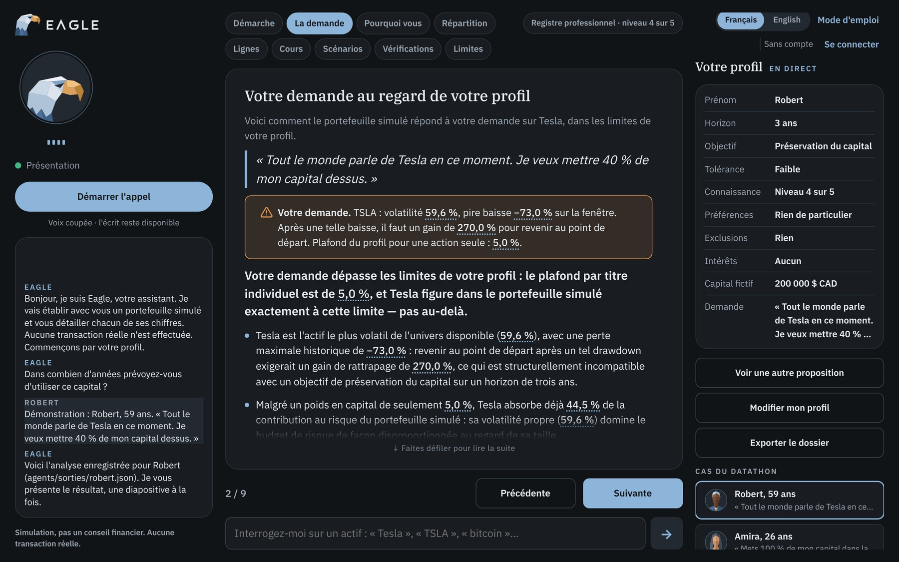
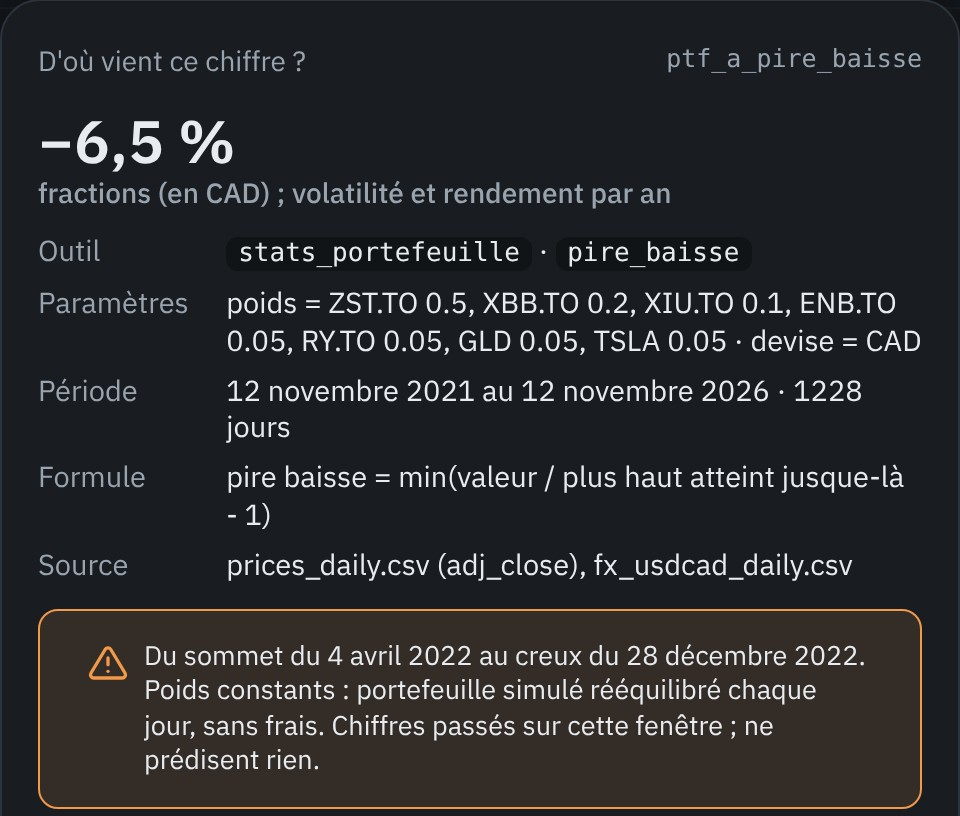

La problématique
Un investisseur ne manque pas de données : il lui manque un moyen de les relier à sa situation et de vérifier ce qu'on lui répond. Un assistant qui dit oui à tout est dangereux ; un refus sans explication est inutile. Robert, 59 ans, proche de la retraite, veut placer 40 % de son capital sur Tesla : la bonne réponse lui montre, chiffres et sources à l'appui, pourquoi cette demande contredit son propre profil, et ce qui lui convient à la place.
L'approche agentique simple, focalisée, vérifiable
écran ou voix
fixe les plafonds
⇄ Gouvernancerejet = retour,
2 essais au plus
limites
- Le code calcule, le modèle explique. Tout chiffre vient d'un outil Python testé et garde la référence de son appel ; un texte de modèle avec un chiffre non tracé est retiré.
- La gouvernance est écrite en code. Un portefeuille hors des limites du profil retourne au constructeur ; chaque contrôle est affiché.


Le cas de Robert, dans Eagle. La tension entre sa demande et son profil est relevée, chiffres à l'appui. En médaillon, la fiche d'un chiffre touché : outil, paramètres, période, formule, source.
Ce qui est original
- Chaque chiffre se touche : sa fiche montre l'outil, les paramètres, la période, la formule et la source.
- Il n'acquiesce pas : une demande qui dépasse le profil est plafonnée, et la tension est expliquée avec ses mesures.
- On voit les agents travailler : l'écran suit l'avancement réel du pipeline, puis montre le constat de chaque agent.
- À l'écran ou à la voix, en français ou en anglais. Eagle mène la présentation à voix haute ; la traduction masque chaque nombre, aucun chiffre ne passe par le modèle.
La capacité d'explication
- Trois niveaux : une phrase, le pourquoi chiffré, le calcul avec sa formule, dans un vocabulaire adapté au niveau déclaré.
- Faits, hypothèses et limites séparés ; une information manquante est signalée, jamais comblée.
- Chaque ligne se justifie : pourquoi elle est là pour ce profil, plutôt que quoi, avec ses sources datées.
- « Scénarios, pas une prévision » : un éventail tiré des mois observés, et un dossier exportable avec toutes les sources.
Mis à l'épreuve sur les trois personas du défi résultats du pipeline, vérifiés par les tests d'acceptation
| Persona | Sa demande | La réponse d'Eagle |
|---|---|---|
| Robert, 59 ansrisque faible à modéré · 3 à 5 ans | « Je veux mettre 40 % de mon capital sur Tesla. » | plafonnéTesla est limité à 5 %, le plafond du profil pour une action. À ce poids, il porte déjà 44,5 % du risque du portefeuille simulé. Sa pire baisse passée, −73,0 %, demande un gain de 270 % pour être effacée. |
| Amira, 26 ansrisque élevé · 15 ans et plus | « Mets 100 % de mon capital dans la crypto et la techno. » | plafonnéCrypto limitée à 10 %, thème technologie plafonné, 8 lignes diversifiées avec un socle obligataire. Volatilité du portefeuille simulé 15,6 %, pire baisse passée −24,6 %. |
| Mateo, 41 ansrisque modéré · 8 à 12 ans · ESG | « Sans pétrolières ni controverses. Tesla, c'est vert : mets-en une bonne part. » | écarté16 actions écartées, chacune avec sa source ; Tesla l'est pour une controverse documentée. La gouvernance a renvoyé une proposition au constructeur, et Eagle signale ce que la composition des FNB ne permet pas de vérifier. |
Les sources de données
Le jeu de départ des organisateurs (31 actifs, cours quotidiens du 12 novembre 2021 au 12 novembre 2026, taux USD/CAD, 9 séries macro de la Banque du Canada et de FRED), complété par 31 actifs d'un univers étendu, une table ESG de 20 actions sourcée sur SEC EDGAR et des décisions officielles, et la composition de 4 FNB publiée par leurs émetteurs. Chaque source est documentée : origine, date, traitement, limites, conditions d'utilisation. Aucune donnée macro n'est utilisée avant sa date de publication.
Les bénéfices concrets
- La personne comprend pourquoi, dans son vocabulaire, et peut vérifier chaque chiffre elle-même.
- Elle voit les limites de l'exercice et n'est jamais poussée vers un risque qui contredit ses propres objectifs.
- Pour une institution : un assistant auditable, dont chaque réponse garde sa trace (outils appelés, données, contrôles).